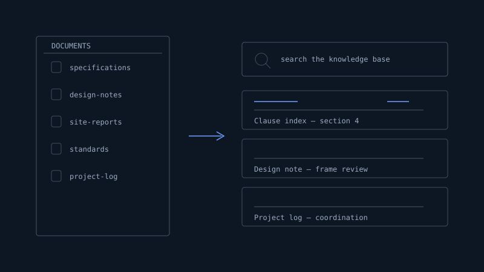
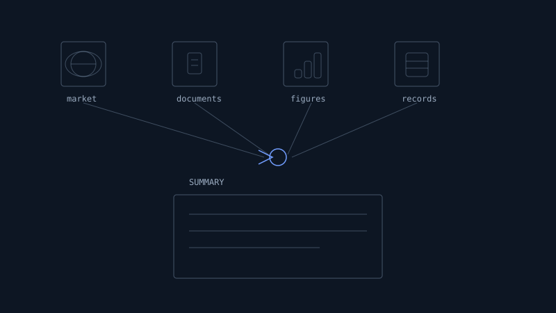
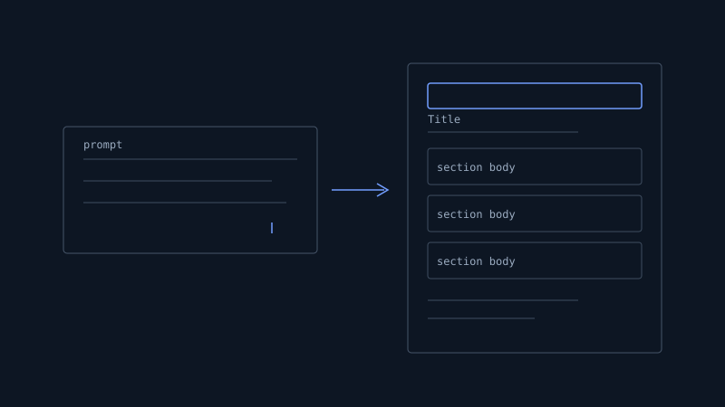

General Automation
everyday office work
AI handles the repetitive office work every company has — so your team spends time on work that needs judgement.

Organising company documents into a searchable knowledge base

Collecting and summarising market or project information automatically

Drafting routine reports, meeting notes and email summaries